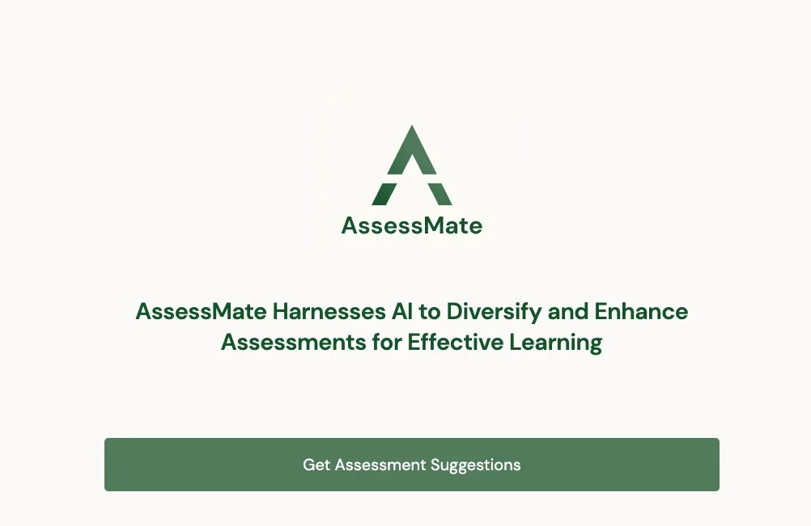

Revision Assessment with AI
AI & learning science-based assessment recommender

Project Overview
Our client is the University of Tasmania in Australia. In this project, we designed an AI-enabled assessment types suggestion system and a corresponding AI Literacy Course to help instructors at the two colleges (College of Arts, Law, and Education and College of Health and Medicine) navigate available assessment tools and best measure students' progress using research-based learning science principles.
Problem
Current assessment tools do not truly reflect students' learning progress due to the emergency of GenAI.
Instructors are not equipped with AI/GenAI knowledge to design the most effective assessment tools.
Current assessments do not fully align with the college program's ultimate learning objectives for students.
Solution
We seek to develop AssessMate, an AI assessment type recommender, and an AI literacy course that address the University of Tasmania's challenges in assessment alignment, diversity, and AI literacy among instructors. Our goal is to provide a solution that suggests assessment types based on intended learning outcomes (ILOs) and domains, while also offering comprehensive training on AI basics across four skill sets: know and understand, use and apply, evaluate and create, and AI ethics.
Tools
Figma
LLM
Prompt Engineering
Team Avant-Garde (AG)
1 learning design lead (me)
1 project manager
1 research lead
1 UX/UI design lead
1 development lead
My Role
Product Management
Research
Design
Timeline
Jan 2024 - present
Overall: 7 months
Discovery & Research: 1 month
Design & testing: 6 months
My Design Process
Research
Our team follows research-based educational design principles.
Therefore, we employed various research methods to support our design decisions.
Interviews
During the ideation phase of the project, I conducted user interviews to build new personas and to inform the design. Together with the team, we prepared an interview script with 10 open-ended questions, focusing on our target audiences’ current use of assessment, pain points, and daily routine. We interviewed 3 professors remotely, and synthesized the following insights:
Instructors are excited and afraid of GenAI. They want to explore such technologies but do not have relevant knowledge. Meanwhile, they realize that students can use ChatGPT for certain assessments, preventing instructors from gauging students' true progress.
Instructors do not have domain knowledge in learning sciences and time or motivation to align their learning objectives with their assessment.
The two colleges have different pain points. Humanity and social science professors consider grading essays time-consuming while medicine professors worry about creating diverse case studies for hands-on practice.
Personas
We wanted to form a deeper understanding of our users' goals, needs, experiences, and behaviors. So, we created 2 personas for each of our user segments. They were based on user interviews, and we kept updating them throughout the project as we gathered more data. These personas are important for guiding our design to ensure our product can meet the needs of different users.
Customer Journey
After creating the personas, we realized that assessment is a complicated process. Thus, we created a customer journey map to understand better how instructors engage in the assessment phase and discover improvement opportunities.
We found design opportunities at 3 stages: designing assessment, grading assessment, and providing feedback and evaluation. However, we decided to focus on the problems at the design stage after these considerations:
Prerequisite – the appropriate type of assessment is essential for all of the following steps. Without the right assessment design, the instructors cannot ensure the effectiveness of the assessment.
Magnitude – most instructors have issues developing innovative and effective assessments: especially in the GenAI era
High Frequency – all instructors have to engage in assessment design
Unique Value Proposition – no other products currently provide assessment types recommendation
Feasibility – time constraints and AI ethical considerations
University Data & Competitor Analysis
Next, we conducted research on both the UTas' current assessment types and the market and concluded the following findings:
Both colleges use exams and essays as primary assessment types, confirming our hypothesis that instructors do not use diverse assessment types.
We found that most AI assessment products in the market do not offer assessment type recommendations or use learning science principles for assessment generation, which led to several white space opportunities for us (in the following table).
Product Idea
Based on all of the insights, we came up with our product idea.
AssessMate + AI Literacy Course
AssessMate is the assessment type recommender that will use LLM and learning science theories to provide appropriate assessment type suggestions to instructors. More importantly, AssessMate can help create ChatGPT-proof assessments to prevent students from exploiting the use of GenAI. The AI Literacy Course focuses on how to understand and use AI in assessment further.
MVP1
We developed our first MVP of AssessMate, a web application that leverages a customized GPT Assistant API with tailored instructions and knowledge, connected through Python.
The user interface is built using HTML, CSS, and JavaScript, and the application is deployed on Heroku for easy accessibility.
This is the starting page of AssessMate. Instructors enter their input to free chat with the system. There are a few instructions to help instructors understand how to improve their prompts.
After the instructor's input, AssessMate will first evaluate the input information, prompting the instructor to provide more relevant information if needed. Then, AssessMate will use the Backward Design principle, starting the suggestion with revised Learning Objectives (LOs).
Lastly, AssessMate will generate assessment recommendations and encourage instructors to consider the use of AI.
MVP1 User Testing Feedback
We conducted user testing with instructors at the University of Tasmania and Carnegie Mellon University, with interview questions on both assessment qualities and usability. We synthesized the feedback into the following insights:
AssessMate MVP1 designed 1 assessment for 1 ILO. However, instructors prefer each ILO to be assessed at least twice so that learners have more opportunities to demonstrate their learnings.
MVP1 generated assessment recommendations with various qualities: it performed worse in health and medicine domains.
Writing prompts might be difficult for some instructors, so more scaffolding is desired to help generate better results.
Instructors are interested in the use of AI options, but they are unsure what options are available to them.
Based on the insights, we designed our actionable points and plan for MVP2.
MVP2
The iterated AssessMate focused on improving user experience and response performance.
As the learning design lead, my main objective is to ensure the stable performance of AssessMate in generating assessment recommendations. Therefore, I consulted experts in learning sciences and LLM and conducted the literature review, determining the following pathways for MVP2 instructional design.
I consulted AI/LLM experts to review AssessMate prompts, communicating with the team developer to improve response accuracy and speed.
I decided to work on Bloom's Taxonomy annotation with our team to ensure that the assessments recommended by AssessMate are appropriately challenging and relevant to the cognitive levels.
I planned to conduct more research on effective assessment in specific domains, such as health and medicine so that the AssessMate model can learn better to generate results.
We followed a standard research method (flow chart on the left) to annotate all ILOs from the University of Tasmania. After annotation and conflict resolution, we imported the annotated data to train MVP2 in its annotation ability.
The comparison (on the right) shows that MVP1 has a correct mapping rate of 70%, and MVP2 can map 90% of the ILOs correctly.
UI Design
Based on MVP1 feedback, we also developed a new user interface in Figma, scaffolding the interaction process. You can also try the prototype below:)
MVP2 Workshop
We conducted a live workshop at the end of the spring semester to gain feedback from 10+ instructors. The synthesized feedback guided our direction for MVP3.
The instructors were impressed with the assessment recommendation generated by AssessMate.
The assessment recommendations, however, sometimes failed to consider student knowledge level. For example, 100-level courses mainly target first-year students, so the assessment should not involve complex assessment types, such as mock trial.
There was still confusion about the use of AI and its related examples in the user interface.
MVP3 Plan
We are now in the phase of MVP3. Currently, we have designed the following plan:
Revise the Bloom's Taxonomy annotation rubric and reanalyze the ILOs. Achieve a coefficient of 0.75 for Cohen's Kappa interrater reliability.
Research on more innovative assessment literature and use of AI suggestions.
Start developing an AI Literacy Course for instructors.
Iterate on UI design and start developing a front-end interface.
Stay tuned for our updates:)
Next Steps
I also created a product roadmap for all of our steps till the end of this project.